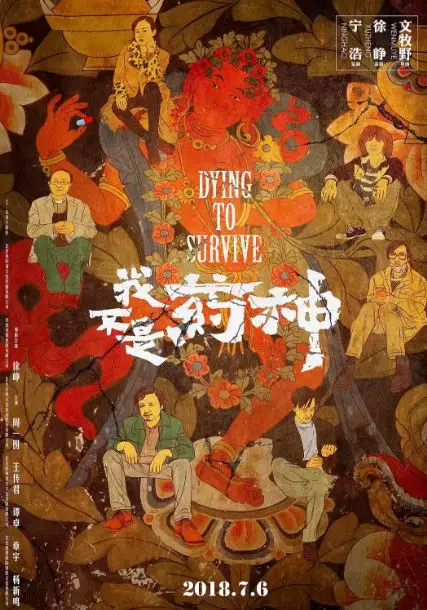
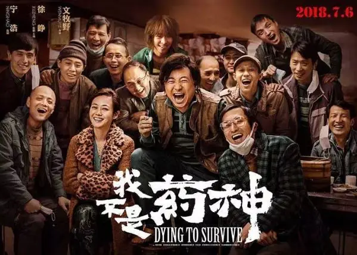
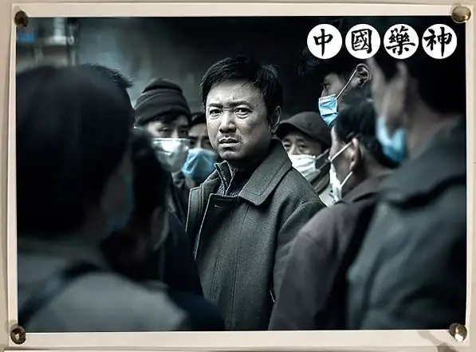
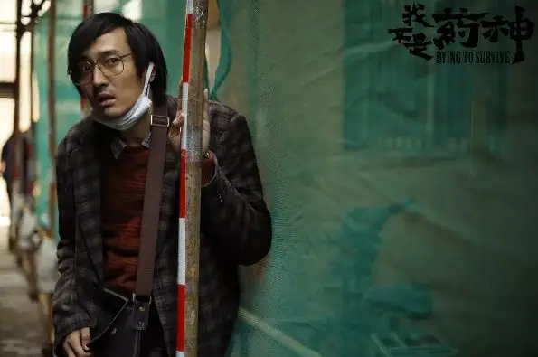
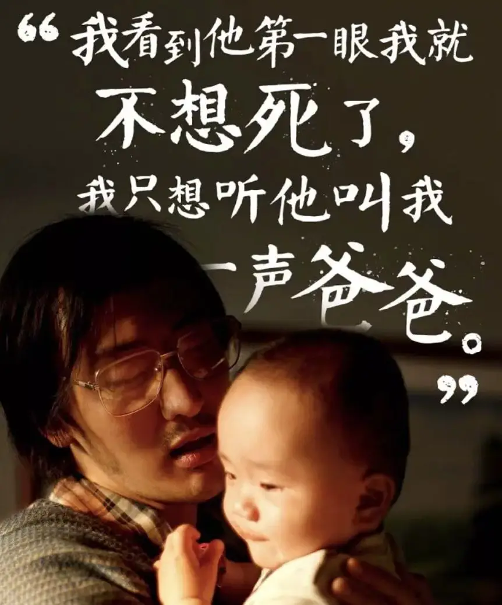

看到《我不是药神》刷屏，我内心是嫉妒的，因为我经常喷国产电影，对这个扶不起的“阿斗”充满了厌恶。
上周，怀着挑剔和嫉妒的心态去电影院观看了电影，随着剧情的慢慢推进，看着演员诚意满满的表演，我心中的警惕慢慢就被打退了。

《我不是药神》值得我们的肯定，我们终于有了自己比较优秀的真实事件改编！

由徐峥扮演的程勇是一个落魄的中年人，他靠卖印度神油为生，日子过得相当窘迫。
程勇上有得重病的老人，下有一个月才能见几次面的儿子，而妻子早已和他离婚。

程勇可以说是一个挣扎于底层社会的失败者。
作为一个小人物，就像他卖的壮阳药一样，他希望自己一下子变得勇猛有力，可实际中，很多事情上他无能为力。
前妻要带着儿子出国，程勇除了发脾气什么也做不了。
父亲得重病拿不出钱，程勇只能把父亲拉回家等死。
就是这样的窘境之下，程勇不得不铤而走险，答应帮助白血病患者吕受益从印度代购价格低廉的仿制药格列宁。
印度格列宁代理价只需要500元，在国内卖的进口专利药瑞士格列宁则需要2.35万。
而印度的仿制药和瑞士专利药的药效基本相同。

就这样，程勇偷运回来的印度格列宁改变了很多人的命运。
在因病返贫的患者眼中，印度格列宁是救命稻草。
在瑞士格列宁代理商的眼中，印度格列宁是灾难。
在中国警察的眼中，印度格列宁是非法走私药，是需要被维稳的对象。
而在程勇的眼中，印度格列宁则是让自己重获尊严的“壮阳药”。
借着这些冲突，电影深入浅出地将白血病患者面临的残酷生存环境展现在观众的眼前。
女儿患有白血病，丈夫便将母女抛弃，为了天价药，思慧不得不在夜店跳脱衣舞，受尽凌辱。
黄毛因为患病，不想让家人操心，以叛逆的姿态远走他乡，等着死亡将自己接走。
一位老人吃天价药吃没了房子，吃垮了家庭，不得不栖身于脏乱的群租房中。
还有为了孩子与病魔顽强抗争的吕受益以及因为病患而处于软弱中的刘牧师。

他们的心酸、他们的眼泪，就像吕受益的橘子一样，只有吃在自己的嘴里，才能明白个中滋味。
而我们的主人公程勇就是要从这群人身上榨取油水，他将500元的药翻了10倍卖了5000元！
我们的“专家”张教授更是专业卖假药20年，脸不红心不跳，一边卖着掺着面粉的假药，一边还放着《感恩的心》。
我们的警察叔叔更是厉害，他们不问对错，不管别人死活，只服不长眼的权力。
因此，张教授在警察眼皮底下卖假药20年平安无事，但是当他卖起能治病的仿制药时却被抓了，这是多大的讽刺！
程勇、张教授、无情的国家机器都是五十步笑百步，他们并不尊重生命，不论被动还是主动，他们都在用自己认为合理的理由为自己攫取利益，用自己的手段吞灭着别人活下去的希望。
当这台庞大残酷的机器不断向前碾压别人的时候，当看着吕受益在绝望中自杀的时候。
上帝留在程勇心中的罪与罚终于被开启了！
他再也受不了，他赚到的第一桶金充满了龌龊和残忍，他瞧不起自己，他对不起给了别人希望又亲手把希望破灭的吕受益。

程勇把药从五千卖回到五百。
印度格列宁从“壮阳药”变成了赎罪祭。
白血病患者从可以赚钱的客户变成了程勇心中常存亏欠的债主。
程勇成为了一个敬畏生命的人。
这份悲悯和尊严给了他面对牢狱和艰难的勇气。
而从救赎中生发出来的爱是谦卑、柔软的。
程勇并没有觉得自己做的有多了不起。
他知道自己并不是药神。
只是一个知道自己犯下大错的小孩。
这种单纯和勇敢赢得了黄毛的尊重和舍命相救，也另一直瞧不起他的曹警官对他肃然起敬。

这部作品在展现黑暗的力度上发力很足，在描写底层群态的细节上非常丰满，人物的转变也是非常细腻，点缀其中的幽默也毫无违和感。
所以看的让人笑中带泪，泪中又充满了无奈和愤怒，而最后从中升腾而出的救赎更给人巨大的安慰。
这是一部令人绝望的电影，也是一部给人盼望的电影，同时也是一部令人警醒的电影。
需要警醒的不仅是我们的政治、经济和科技，更是我们的信仰。
以我们现在不算发达的条件，让穷苦人免费吃到格列宁等重要药物并非难事。
只是没有信仰，小到个人，大到组织，我们根本看不到那些病患者的需要和眼泪，我们关注的只是个体的前途和群体的china梦。
我们以为在追梦，岂不知我们一直在意淫中走向荒凉。
而处于荒凉中的受害者，更需要真正的信仰，而不是转瞬即逝的偶像。
如果哪一天我们真的实现了全民医疗免费，那个时候我们就不再需要药神。
但是，我们可能需要让我们富裕的财神，需要永葆青春的科技之神，需要让我们充满格调的时尚之神，也可能是让我们满腹经纶的智慧之神，更有可能的是高举民主的自由之神。
中国人从来都不缺乏造神的能力和智慧，但却鲜有仰望星空、关注灵魂的饥渴。
得病了药不能停，灵魂饥渴了我们就可以亵慢么！
这个问题留给我自己。
相关推荐：
击垮纳粹独裁的六份传单
这是一部无神论永远都看不懂的获奖电影！
这是一部绝不可辜负的经典
这里没有挑逗你眼目情欲的小鲜肉
也没有挑动你肉体情欲的段子
更没有膨胀你今生骄傲的鸡血
我们只在乎那些最质朴真诚的作品
在那里我们才能恢复真正的想象力
我们也坚信这才是我们真正需要的

ID:Six_hundred_hits
长按二维码，一键关注
【六百击】
-END-
电影评论
尽情分享朋友圈

苹果打赏通道
小提示：文末广告是腾讯配送广告，内容与本号无关，但您的每次点击（无需反复点）都会给平台带来几毛收益，欢迎您点击支持六百击。